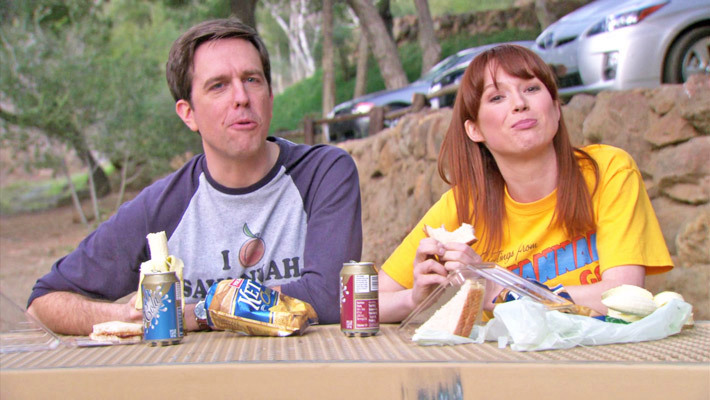

Erin Hannon
Erin Hannon, portrayed by Ellie Kemper, is a fun-loving young girl but can be very oblivious and dumb at times. Sometimes saying things like, "Disposable cameras are fun. Although it does seem wasteful and you don't ever get to see your pictures." Thinking that you take photos on a disposable camera and then throw it out. Or "Whenever I'm sick it goes away within a few hours. Except once, when I was in the hospital from age three to six." A key part of Erin's character is her history as an orphan. She often mentions her foster homes and other experiences she missed out on being an orphan. Although in the "Finale," her birth parents show up at the Q&A, and they reunite.

When Erin joins the cast in Season 5 to replace Pam after she switches to sales. Salesman Andy Bernard immediately likes her but wants her to make the first move. They both unsuccessfully try to hint to each other that they would like the other to ask them out. In Season 6 in the episode "Murder," Andy finally asks Erin out, but the date gets called off because of miscommunication. In "The Delivery," Andy asks Erin out on a fax, and she gleefully excepts. The date for the rest of the season until the episode "Secretary's Day" Michael reveals that Angela and Andy had been engaged, and she dumps Andy.
In Season 7, Erin dates her boss Gabe Lewis. The two have a rather strange relationship where he is desperately in love with her, and she is still confused about her feelings. After talking to Pam about her doubts with Gabe, it is clear she does not like him, and she awkwardly breaks up with him in front of the whole office in "Michaels Last Dundies."
In Season 8, Andy dates Jessica, which Erin pretends to be okay with but admits she would like Jessica to die after getting drunk. Erin goes on a company business trip to Florida but decides to permanently stay there after meeting an elderly woman she gets a job working for. After Andy finds out, he realizes he still loves her and drives to Florida to win her back. She initially says no but finally agrees and drives back with him. Sadly at the start of Season 9, Andy decides to go sail around the world and doesn't ask Erin to join him. Erin sees this as him continuing his selfish patterns, and when he gets back, he breaks up with him and starts dating Pete.
Erin and Pete have an adorable relationship that doesn't get a lot of attention, but he wants what's best for her, and they seem to be very compatible. The "Finale" time jumps a year, and we see Erin and Pete chatting, but they do not reveal the status of their relationship.